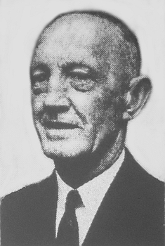

Stanley Le Ruez fut né à Sainte Mathie au mais d'Juilet 1901. I' fut êcolé à Saint Louothains (Harleston House School) et s'en fut travailli siez un homme d'affaithes en 1917. Trais an pus tard i' tchittit pouor aller travailli à la Banque Midland et restit là eune quarantaine d'années. I' s'èrtithit en 1961. En 1966 i' s'mînt sus les rangs pouor Sénateu, mais n'fut pon êlu. Tout coumme dans l'êlection pouor Député à Saint Hélyi (Distri Neunmétho 3) en 1967, i' gângnit, mais i' r'muit au Distri Neunmétho 2 à Saint Saûveux (la Pâraisse dans tchi qu'i' d'meuthait) ès êlections d'1969. I' fut ré-êlu en 1972 et 1975 et s'èrtithit en 1978.
Il êcrivait des textes, et des pièches dé thiâtre pouor les Séthées Jèrriaises dé l'Eisteddfod.